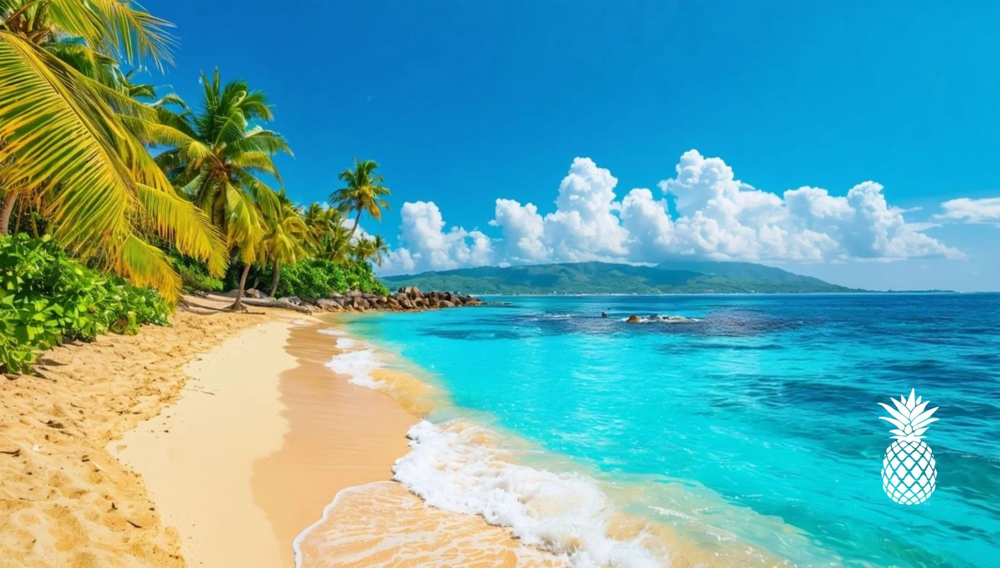

| Fläche | 48.730 km² | ||||||||
|---|---|---|---|---|---|---|---|---|---|
| Einwohner | 11.100.000 | ||||||||
| BIP-Infos |
|
||||||||
| Währung | Peso | ||||||||
| Slogan | Bandera, Trabajo y Paz | ||||||||
| Flagge, Arbeit und Frieden | |||||||||
| Hauptstadt | Santo Domingo | ||||||||
| Internet-TLD | .do |

Amtsprachen:https://www.godominicanrepublic.com
Kunst und Kultur:Die Dominikanische Republik wurde 1492 von Christoph Kolumbus entdeckt und war die erste europäische Kolonie in der Neuen Welt. 1821 erlangte sie kurzzeitig die Unabhängigkeit von Spanien, wurde aber 1822 von Haiti besetzt. 1844 erklärte sie endgültig ihre Unabhängigkeit. Im 20. Jahrhundert erlebte das Land Diktaturen und politische Instabilität. Heute ist es eine der am schnellsten wachsenden Volkswirtschaften der Karibik, kämpft aber mit sozialer Ungleichheit.
Die Kultur der Dominikanischen Republik ist eine lebendige Mischung aus afrikanischen, spanischen und indigenen Einflüssen. Diese Vielfalt zeigt sich in der Musik, die von Merengue und Bachata bis hin zu modernen Stilen reicht, die auf internationalen Bühnen populär sind. Die dominikanische Küche ist ebenfalls ein Ausdruck dieser kulturellen Synthese, mit Gerichten wie Mangu und Sancocho, die in vielen Haushalten serviert werden. Feste und Karnevalsfeiern sind ein zentraler Bestandteil des sozialen Lebens, wobei traditionelle Tänze und farbenfrohe Kostüme die kulturelle Identität des Landes unterstreichen.
Hauptindustrien